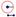
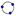
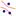
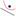

Circle[Point M, Number r]: Yields a circle with midpoint M and radius r.
Circle[Point M, Segment]: Yields a circle with midpoint M whose radius is equal to the length of the given segment.
Circle[Point M, Point A]: Yields a circle with midpoint M through point A.
Circle[Point A, Point B, Point C]: Yields a circle through the given points A, B and C.
Note: Also see tools  Compass, Circle with Center through Point, Circle with Center and Radius, and  Circle through Three Points
Conic[Point
A, Point B, Point C, Point D, Point E]: Returns a conic section
through the five given points A, B, C,
D, and E.
Note: If four of the points lie on one line
the conic section is not defined.
Note: Also see tool Conic through Five Points
Ellipse[Point
F, Point G, Number a]: Creates an ellipse with focal points F and G and semimajor axis length a.
Note: Condition: 2a > Distance[F, G]
Ellipse[Point F, Point G, Segment]: Creates an ellipse with focal points F and G where the length of the semimajor axis equals the length of the given segment.
Ellipse[Point F, Point G, Point A]: Creates an ellipse with foci F and G passing through point A.
Note: Also see tool Ellipse
Hyperbola[Point
F, Point G, Number a]: Creates a hyperbola with focal points F and G and semimajor axis length a.
Note: Condition: 0 < 2a < Distance[F, G]
Hyperbola[Point F, Point G, Segment]: Creates a hyperbola with focal points F. and G where the length of the semimajor axis equals the length of segment s.
Hyperbola[Point F, Point G, Point A]: Creates a hyperbola with foci F and G passing through point A.
Note: Also see tool  Hyperbola
OsculatingCircle[Point, Function]: Yields the osculating circle of the function in the given point.
OsculatingCircle[Point, Curve]: Yields the osculating circle of the curve in the given point.
Parabola[Point F, Line g]: Returns a parabola with focal point F and directrix g.
Note: Also see tool  Parabola